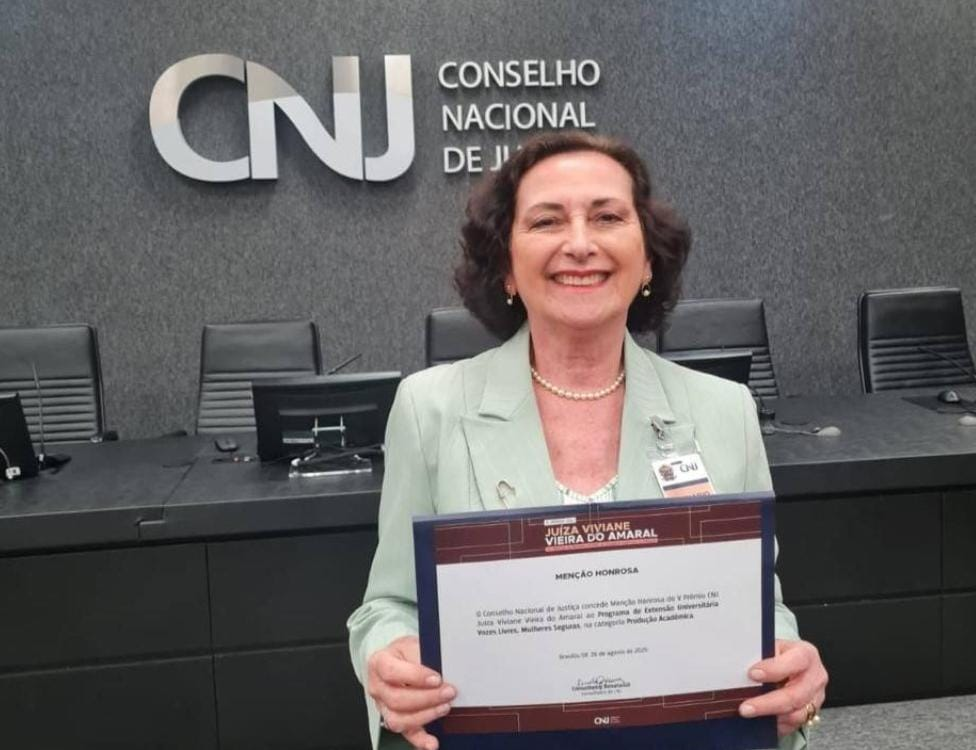

Menção Honrosa no Prêmio Juíza Viviane do Amaral — CNJ
O programa foi contemplado com menção honrosa, correspondente ao terceiro lugar no país na categoria Produção Acadêmica, no Prêmio Juíza Viviane do Amaral, promovido pelo Conselho Nacional de Justiça.